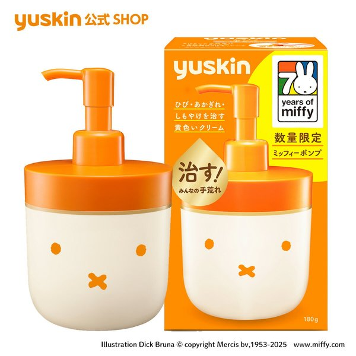
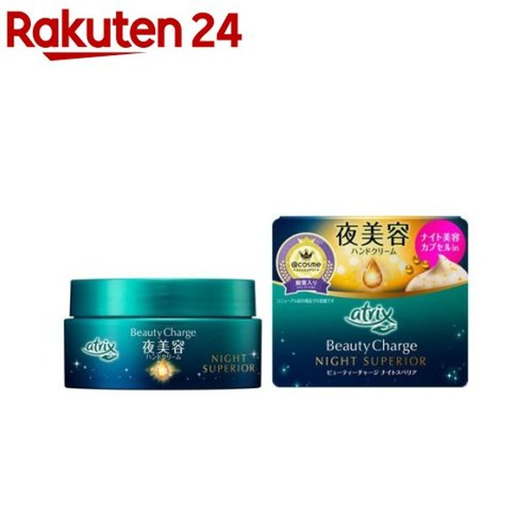
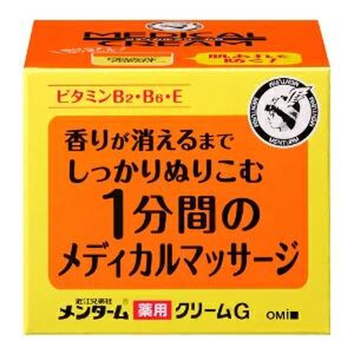
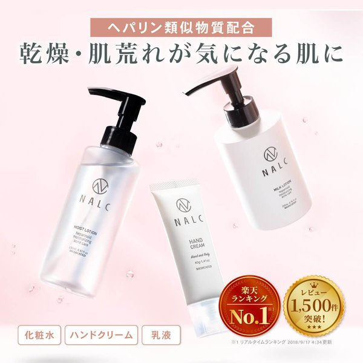
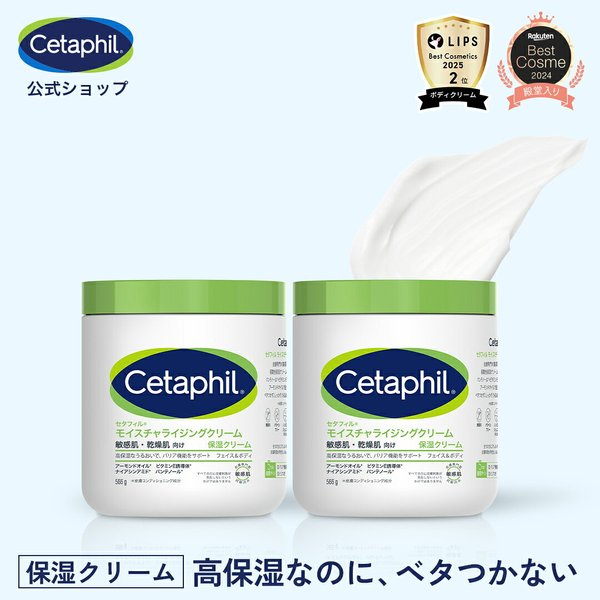
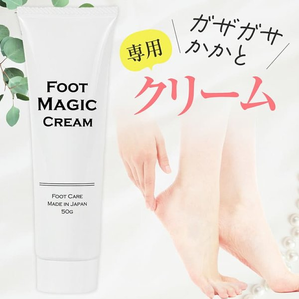
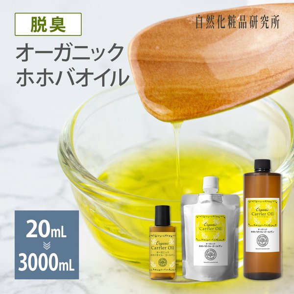
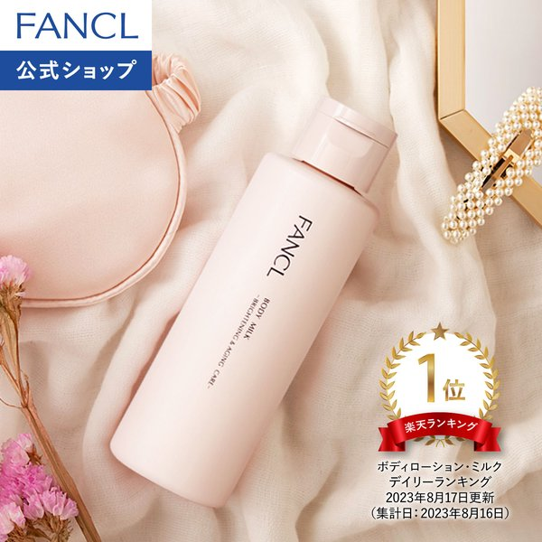
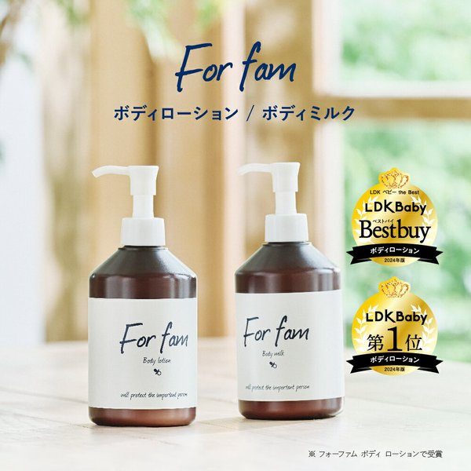
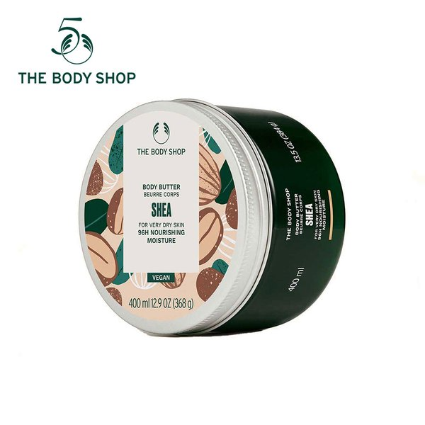

【冬の乾燥肌対策】ベタつかないハンドクリーム＆高保湿ボディケアおすすめ10選
冬になると、手を洗うたびに指先がつっぱり、夕方には手の甲がカサつく。ボディも、下着やタイツが擦れる膝やすねから乾燥が進みます。暖房の効いた部屋にいる時間が長いほど、この乾燥は加速します。
ハンドクリームは「塗り直せるか」が勝負です。ポンプ式を洗面所とキッチンに、チューブをバッグに。ボディはお風呂上がりの5分以内に塗ると、水分を逃がさずに済みます。ベタつきが苦手ならミルクやローション、こっくり感が欲しいならバターやクリームと、質感で選び分けます。
本記事では、楽天市場で人気・高評価のハンドクリーム＆高保湿ボディケア10選を、実売価格とレビュー評価つきで写真付き紹介します。
- おすすめ10選 スペック・特徴比較表
- BEST 1｜ハンドクリーム 180g ミッフィーポンプ
- BEST 2｜ビューティーチャージ ナイトスペリア 98g
- BEST 3｜メンターム 薬用メディカルクリームGn 145g
- BEST 4｜薬用ボディクリーム（ヘパリン類似物質配合・無香料）
- BEST 5｜モイスチャライジングクリーム 566g 2個組
- BEST 6｜かかとクリーム 尿素配合（かかとケア）
- BEST 7｜オーガニック ホホバオイル（脱臭・無添加）
- BEST 8｜ボディミルク ブライトニング＆エイジングケア
- BEST 9｜ボディローション＆ボディミルク 300g（無香料・6種のセラミド）
- BEST 10｜ボディバター シア 400mL（数量限定）
- 【読者負担0円】買わなくても得する無料サービス
- まとめ：ハンドクリーム＆ボディケア10選の選び方
| 順位 | 商品名 | ブランド | 最大の特徴・おすすめ理由 | 総合評価 |
|---|---|---|---|---|
| BEST 1 | ハンドクリーム 180g ミッフィーポンプ | ユースキン | 180gポンプで家族で使える | 4.91 |
| BEST 2 | ビューティーチャージ ナイトスペリア 98g | アトリックス | 寝る前の集中保湿に向く | 4.71 |
| BEST 3 | メンターム 薬用メディカルクリームGn 145g | 近江兄弟社 | 145gでコスパが良い | 5.00 |
| BEST 4 | 薬用ボディクリーム（ヘパリン類似物質配合・無香料） | NALC（ナルク） | ヘパリン類似物質配合の医薬部外品 | 4.66 |
| BEST 5 | モイスチャライジングクリーム 566g 2個組 | セタフィル | 566g×2個の大容量 | 4.80 |
| BEST 6 | かかとクリーム 尿素配合（かかとケア） | ゆかい屋 | 尿素配合でかかとの角質ケアに向く | 4.48 |
| BEST 7 | オーガニック ホホバオイル（脱臭・無添加） | ナチュラルコスメ | 天然100%・無添加 | 4.71 |
| BEST 8 | ボディミルク ブライトニング＆エイジングケア | ファンケル | 保湿とエイジングケアを1本で | 4.68 |
| BEST 9 | ボディローション＆ボディミルク 300g（無香料・6種のセラミド） | For fam | 無香料で家族で使える | 4.68 |
| BEST 10 | ボディバター シア 400mL（数量限定） | THE BODY SHOP | シアバターの濃厚な保湿 | 4.78 |
ハンドクリーム 180g ミッフィーポンプ

ひび・あかぎれ・しもやけ対策で知られるユースキンの大容量ポンプ。180g入りで、洗面所やキッチンに置いて家族で使えます。指定医薬部外品で、乾燥が進んで手の甲がざらつく時期にも使いやすい定番です。楽天市場での実売価格は約1,760円（2026年11月時点）。
- 180gポンプで家族で使える
- 指定医薬部外品
- レビュー182件・評価4.91
- 独特の香りがあり、無香料派には不向き
ビューティーチャージ ナイトスペリア 98g

寝る前に塗るタイプのハンドクリーム。就寝中の乾燥を防ぎ、朝の手のつっぱりをやわらげます。日中は家事や洗い物で手を洗うことが多い人でも、夜の1回で保湿を補えるのが利点です。楽天市場での実売価格は約1,026円（2026年11月時点）。
- 寝る前の集中保湿に向く
- 塗った後のベタつきが少ない
- ドラッグストアでも買える定番
- 夜用のため、日中のこまめな塗り直しには向かない
メンターム 薬用メディカルクリームGn 145g

肌あれ・ひび・あかぎれを防ぐ医薬部外品のクリーム。145gの大容量で、手だけでなく肘や膝、かかとにも使えます。しもやけが毎年出る人、家族で1本を共有したい人に向いています。楽天市場での実売価格は約865円（2026年11月時点）。
- 145gでコスパが良い
- 手以外にも使える
- 医薬部外品
- 塗った直後はやや重さを感じる
薬用ボディクリーム（ヘパリン類似物質配合・無香料）

ヘパリン類似物質を配合した薬用のボディクリーム。敏感肌向けの低刺激設計で、無香料なので香り付きのケアが苦手な人にも使いやすい。ポンプタイプで、お風呂上がりにそのまま塗れます。楽天市場での実売価格は約2,933円（2026年11月時点）。
- ヘパリン類似物質配合の医薬部外品
- 無香料・低刺激
- ポンプで塗りやすい
- さらっとした使い心地なので、強い乾燥には物足りないことがある
モイスチャライジングクリーム 566g 2個組

楽天ベストコスメ殿堂入りの保湿クリーム。566gの大容量が2個組で、顔にも全身にも使えます。ナイアシンアミド配合で、乾燥と肌荒れが同時に気になる人に向いています。楽天市場での実売価格は約3,889円（2026年11月時点）。
- 566g×2個の大容量
- 顔にも体にも使える
- レビュー7,961件・評価4.8
- 2個組なので保管場所を取る
かかとクリーム 尿素配合（かかとケア）

尿素を配合したかかと用クリーム。ひび割れやガサガサが気になるかかとに塗り込み、靴下を履いて寝ると翌朝の感触が変わります。フットケアを始めたい人の最初の1本に向いています。楽天市場での実売価格は約1,280円（2026年11月時点）。
- 尿素配合でかかとの角質ケアに向く
- 1,280円で始めやすい
- レビュー69件・評価4.48
- 効果を感じるまで毎日の塗り込みが必要
オーガニック ホホバオイル（脱臭・無添加）

天然100%のホホバオイル。脱臭処理されているので、オイル独特のニオイが気になりません。お風呂上がりの体に少量なじませるほか、髪や頭皮にも使えます。1本で何役もこなすオイルを探している人向けです。楽天市場での実売価格は約630円（2026年11月時点）。
- 天然100%・無添加
- 脱臭済みでニオイが少ない
- ボディにも髪にも使える
- オイルなので塗りすぎるとベタつく
ボディミルク ブライトニング＆エイジングケア

医薬部外品のボディミルク。保湿しながら、乾燥によるくすみやエイジングケアもまとめて行えます。伸びのよいミルクタイプで、お風呂上がりの濡れた肌にも塗り広げやすいのが特徴です。楽天市場での実売価格は約1,320円（2026年11月時点）。
- 保湿とエイジングケアを1本で
- 伸びがよく塗りやすい
- レビュー3,462件・評価4.68
- クリームより軽いので、乾燥が強い部分は重ね塗りが要る
ボディローション＆ボディミルク 300g（無香料・6種のセラミド）

6種のセラミドと植物由来の保湿成分を配合したボディローション。無香料で、子どもと一緒に使える処方です。300gの大容量ポンプで、家族全員のボディケアを1本でまかなえます。楽天市場での実売価格は約3,190円（2026年11月時点）。
- 無香料で家族で使える
- セラミド配合で保湿力が高い
- 300gの大容量
- さらっとした使用感で、しっとり感を求める人には軽い
ボディバター シア 400mL（数量限定）

シアバターをたっぷり配合したボディバター。こっくりした質感で、乾燥がひどい肘や膝、すねにも塗り込めます。数量限定の大容量サイズで、冬の間使い切る量をまとめて確保したい人に向いています。楽天市場での実売価格は約5,940円（2026年11月時点）。
- シアバターの濃厚な保湿
- 400mLの大容量
- 数量限定のサイズ
- 伸びが重く、塗るのに時間がかかる
この記事の商品を買う前に、まずは無料で得する選択肢をチェック。どれも登録・利用は0円で、無料期間中に解約すれば料金はかかりません。読みたい雑誌がある人、ポイントを貯めたい人、アンケートなら気軽という人、それぞれに合うものを選べます。
初回31日無料・無料期間中に解約すれば0円 → 楽天ポイントモール｜登録無料で毎日ポイ活
買い物なしでもポイントが貯まる無料サービス → 楽天インサイト｜アンケートに答えてポイント
登録無料・すきま時間のアンケートで貯まる → 楽天カード｜年会費永年無料
新規発行・年会費ずっと0円 →
4つのサービスの違いと使い分けは「出費0円で得する！買わずにポイントが貯まる無料サービス厳選4選」でまとめています。
💡 まとめ：ハンドクリーム＆ボディケア10選の選び方
冬の乾燥は、高いクリームを1本買うより、塗る場所とタイミングを増やすほうが効きます。洗面所とキッチンにポンプのハンドクリーム、バッグにチューブ、お風呂上がりにボディ用をひと塗り。かかとのひび割れが気になるなら尿素クリームを追加し、それでも足りなければバターやオイルで蓋をする。この順番で揃えると、出費を抑えながら乾燥のピークを越えられます。
楽天市場では「5と0のつく日」や「お買い物マラソン」などのキャンペーンに合わせて購入すると、ポイント還元が最大化してお得に手に入ります。ぜひチェックしてみてくださいね。